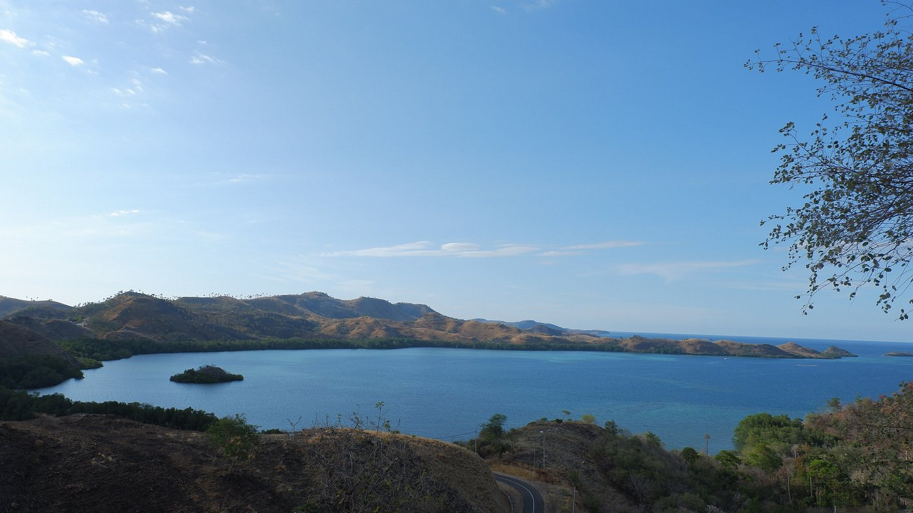
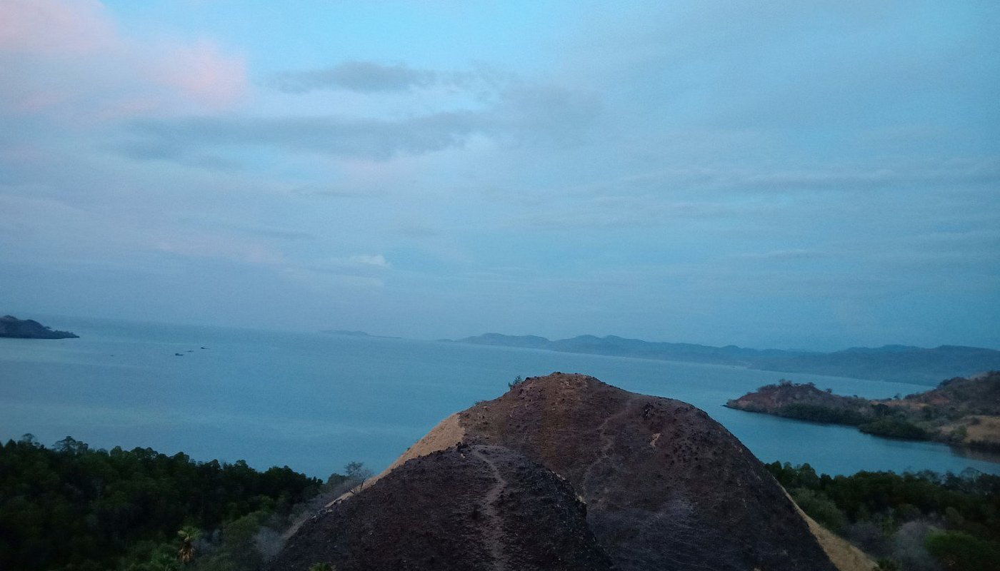
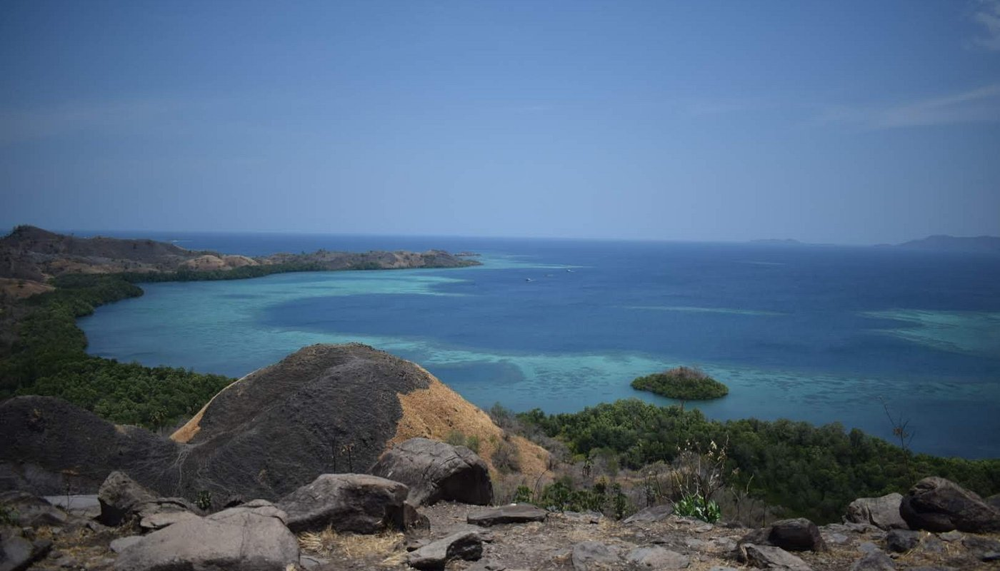
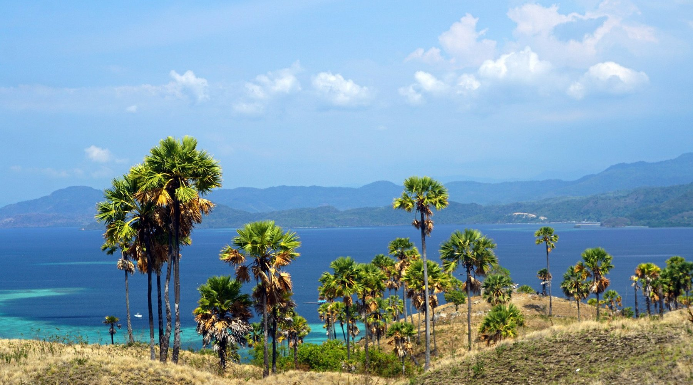

Bukit Cinta adalah salah satu tempat wisata populer di Labuan Bajo, dikenal dengan pemandangan yang memukau dan udara segar. Dari bukit ini, pengunjung dapat menikmati panorama indah yang mencakup pulau-pulau sekitar, laut biru, dan matahari terbenam yang spektakuler.
Tempat ini sering kali menjadi spot foto yang terkenal, terutama bagi para pecinta alam dan fotografi. Selain itu, perjalanan menuju Bukit Cinta juga menawarkan pengalaman trekking yang menyenangkan dan mengasyikkan.
Bukit Cinta menawarkan pengalaman luar biasa yang akan membuat siapa saja jatuh cinta dengan keindahan alam Labuan Bajo. Jangan lupa untuk membawa kamera dan menikmati keindahan alam yang luar biasa ini.




Tips Berkunjung ke Bukit Cinta
- Persiapkan fisik Anda untuk melakukan trekking, terutama saat cuaca panas.
- Bawa air minum untuk menjaga tubuh tetap terhidrasi selama perjalanan.
- Gunakan sepatu yang nyaman dan cocok untuk trekking.
- Datanglah lebih awal untuk menghindari keramaian dan menikmati matahari terbit.
- Jangan lupa membawa kamera untuk menangkap momen indah dari puncak bukit.